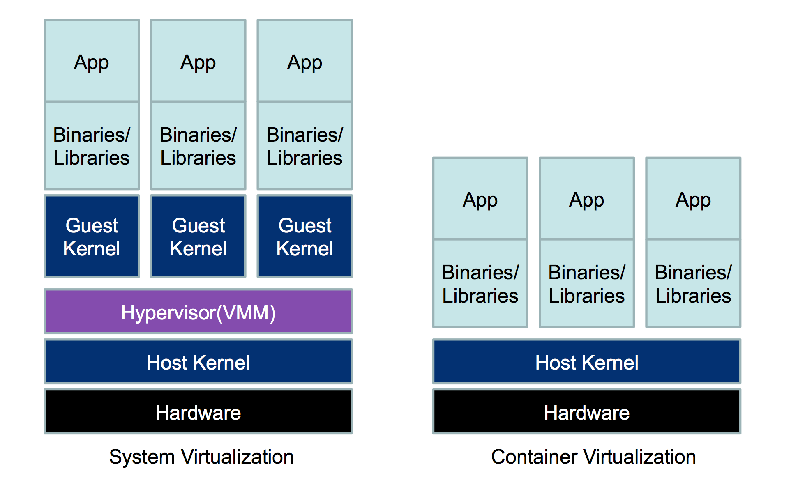
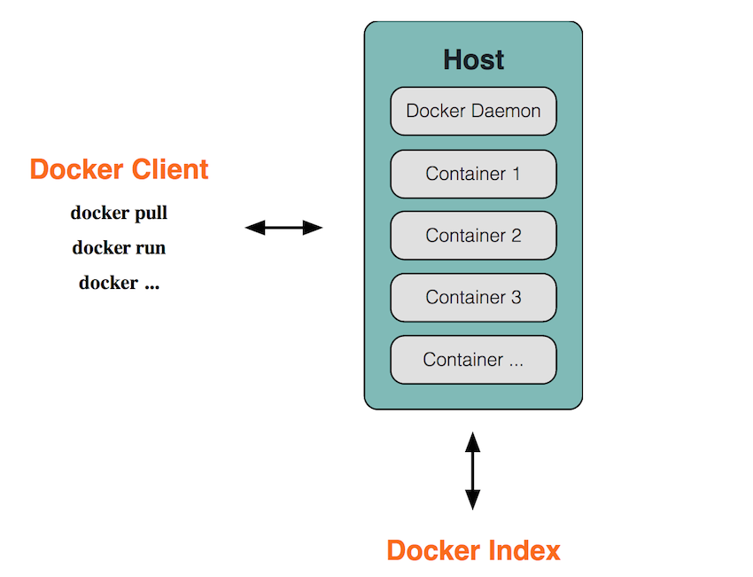

：Docker入门教程-纯洁的微笑-51CTO博客_files/share_default.jpg)
：Docker入门教程-纯洁的微笑-51CTO博客_files/50768f7d453813db433782e76c9f1d44.png)
：Docker入门教程-纯洁的微笑-51CTO博客_files/blog_qr.png)
如今Docker的使用已经非常普遍，特别在一线互联网公司。使用Docker技术可以帮助企业快速水平扩展服务，从而到达弹性部署业务的能力。在云服务概念兴起之后，Docker的使用场景和范围进一步发展，如今在微服务架构越来越流行的情况下，微服务+Docker的完美组合，更加方便微服务架构运维部署落地。
本文详细解释介绍Docker入门相关内容，后期重点关注Docker在微服务体系中的使用。在了解Docker之前我们先考虑几个问题：1、Docker是什么？2、为什么要使用Docker，它有什么优势？带着这些问题我们来看看下面的内容。
什么是Docker?
Docker 是世界领先的软件容器平台。开发人员利用 Docker 可以消除协作编码时“在我的机器上可正常工作”的问题。运维人员利用 Docker 可以在隔离容器中并行运行和管理应用，获得更好的计算密度。企业利用 Docker 可以构建敏捷的软件交付管道，以更快的速度、更高的安全性和可靠的信誉为 Linux 和 Windows Server 应用发布新功能。
Docker 属于 Linux 容器的一种封装，提供简单易用的容器使用接口。它是目前最流行的 Linux 容器解决方案。Docker 将应用程序与该程序的依赖，打包在一个文件里面。运行这个文件，就会生成一个虚拟容器。程序在这个虚拟容器里运行，就好像在真实的物理机上运行一样。有了 Docker，就不用担心环境问题。
总体来说，Docker 的接口相当简单，用户可以方便地创建和使用容器，把自己的应用放入容器。容器还可以进行版本管理、复制、分享、修改，就像管理普通的代码一样。
Docker 最初是 dotCloud 公司创始人 Solomon Hykes 在法国期间发起的一个公司内部项目，它是基于 dotCloud 公司多年云服务技术的一次革新，并于 2013 年 3 月以 Apache 2.0 授权协议开源，主要项目代码在 GitHub 上进行维护。Docker 项目后来还加入了 Linux 基金会，并成立推动 开放容器联盟（OCI）。
Docker 自开源后受到广泛的关注和讨论，至今其 GitHub 项目已经超过 4 万 6 千个星标和一万多个 fork。甚至由于 Docker 项目的火爆，在 2013 年底，dotCloud 公司决定改名为 Docker。Docker 最初是在 Ubuntu 12.04 上开发实现的；Red Hat 则从 RHEL 6.5 开始对 Docker 进行支持；Google 也在其 PaaS 产品中广泛应用 Docker。
为什么要使用Docker
容器除了运行其中应用外，基本不消耗额外的系统资源，使得应用的性能很高，同时系统的开销尽量小。传统虚拟机方式运行 10 个不同的应用就要起 10 个虚拟机，而Docker 只需要启动 10 个隔离的应用即可。
具体说来，Docker 在如下几个方面具有较大的优势。
1、更快速的交付和部署
对开发和运维（devop）人员来说，最希望的就是一次创建或配置，可以在任意地方正常运行。
开发者可以使用一个标准的镜像来构建一套开发容器，开发完成之后，运维人员可以直接使用这个容器来部署代码。 Docker 可以快速创建容器，快速迭代应用程序，并让整个过程全程可见，使团队中的其他成员更容易理解应用程序是如何创建和工作的。 Docker 容器很轻很快！容器的启动时间是秒级的，大量地节约开发、测试、部署的时间。
2、更高效的虚拟化
Docker 容器的运行不需要额外的 hypervisor 支持，它是内核级的虚拟化，因此可以实现更高的性能和效率。
3、更轻松的迁移和扩展
Docker 容器几乎可以在任意的平台上运行，包括物理机、虚拟机、公有云、私有云、个人电脑、服务器等。 这种兼容性可以让用户把一个应用程序从一个平台直接迁移到另外一个。
4、更简单的管理
使用 Docker，只需要小小的修改，就可以替代以往大量的更新工作。所有的修改都以增量的方式被分发和更新，从而实现自动化并且高效的管理。
Docker vs VM
从下图可以看出，VM是一个运行在宿主机之上的完整的操作系统，VM运行自身操作系统会占用较多的CPU、内存、硬盘资源。Docker不同于VM，只包含应用程序以及依赖库，基于libcontainer运行在宿主机上，并处于一个隔离的环境中，这使得Docker更加轻量高效，启动容器只需几秒钟之内完成。由于Docker轻量、资源占用少，使得Docker可以轻易的应用到构建标准化的应用中。但Docker目前还不够完善，比如隔离效果不如VM，共享宿主机操作系统的一些基础库等；网络配置功能相对简单，主要以桥接方式为主；查看日志也不够方便灵活。

Docker 在容器的基础上，进行了进一步的封装，从文件系统、网络互联到进程隔离等等，极大的简化了容器的创建和维护。使得 Docker 技术比虚拟机技术更为轻便、快捷。
作为一种新兴的虚拟化方式，Docker 跟传统的虚拟化方式相比具有众多的优势。Docker 容器的启动可以在秒级实现，这相比传统的虚拟机方式要快得多；Docker 对系统资源的利用率很高，一台主机上可以同时运行数千个 Docker 容器。
相关概念
Docker是CS架构，主要有两个概念：
- Docker daemon: 运行在宿主机上，Docker守护进程，用户通过Docker client(Docker命令)与Docker daemon交互
- Docker client: Docker 命令行工具，是用户使用Docker的主要方式，Docker client与Docker daemon通信并将结果返回给用户，Docker client也可以通过socket或者RESTful api访问远程的Docker daemon

了解了Docker的组成，再来了解一下Docker的三个主要概念：
- Docker image：镜像是只读的，镜像中包含有需要运行的文件。镜像用来创建container，一个镜像可以运行多个container；镜像可以通过Dockerfile创建，也可以从Docker hub/registry上下载。
- Docker container：容器是Docker的运行组件，启动一个镜像就是一个容器，容器是一个隔离环境，多个容器之间不会相互影响，保证容器中的程序运行在一个相对安全的环境中。
- Docker hub/registry: 共享和管理Docker镜像，用户可以上传或者下载上面的镜像，官方地址为
https://registry.hub.docker.com/，也可以搭建自己私有的Docker registry。
镜像就相当于打包好的版本，镜像启动之后运行在容器中，仓库就是装存储镜像的地方。
Docker安装
建议在linux环境下安装Docker，window环境搭建比较复杂且容易出错，使用Centos7+yum来安装Docker环境很方便。
Docker 软件包已经包括在默认的 CentOS-Extras 软件源里。因此想要安装 docker，只需要运行下面的 yum 命令：
yum install docker安装完成后，使用下面的命令来启动 docker 服务，并将其设置为开机启动：
service docker start
chkconfig docker onLCTT 译注：此处采用了旧式的 sysv 语法，如采用CentOS 7中支持的新式 systemd 语法，如下：
systemctl start docker.service
systemctl enable docker.service测试
docker version输入上述命令，返回docker的版本相关信息，证明docker安装成功。
Hello World
下面，我们通过最简单的 image 文件"hello world"，感受一下 Docker。
因为国内连接 Docker 的官方仓库很慢，因此我们在日常使用中会使用Docker 中国加速器。通过 Docker 官方镜像加速，中国区用户能够快速访问最流行的 Docker 镜像。该镜像托管于中国大陆，本地用户现在将会享受到更快的下载速度和更强的稳定性，从而能够更敏捷地开发和交付 Docker 化应用。
Docker 中国官方镜像加速可通过registry.docker-cn.com访问。该镜像库只包含流行的公有镜像，私有镜像仍需要从美国镜像库中拉取。
修改系统中docker对应的配置文件即可，如下：
vi /etc/docker/daemon.json
#添加后
{
"registry-mirrors": ["https://registry.docker-cn.com"],
"live-restore": true
}运行下面的命令，将 image 文件从仓库抓取到本地。
docker pull library/hello-world上面代码中，docker image pull是抓取 image 文件的命令。library/hello-world是 image 文件在仓库里面的位置，其中library是 image 文件所在的组，hello-world是 image 文件的名字。
抓取成功以后，就可以在本机看到这个 image 文件了。
docker images
#显示结果
REPOSITORY TAG IMAGE ID CREATED SIZE
docker.io/hello-world latest f2a91732366c 3 months ago 1.848 kB现在，运行这个 image 文件。
docker run hello-world
#显示结果
Hello from Docker!
This message shows that your installation appears to be working correctly.
...输出这段提示以后，hello world就会停止运行，容器自动终止。有些容器不会自动终止，因为提供的是服务，比如Mysql镜像等。
常用命令
除过以上我们使用的Docker命令外，Docker还有一些其它常用的命令
拉取docker镜像
docker pull image_name查看宿主机上的镜像，Docker镜像保存在/var/lib/docker目录下:
docker images删除镜像
docker rmi docker.io/tomcat:7.0.77-jre7 或者 docker rmi b39c68b7af30查看当前有哪些容器正在运行
docker ps查看所有容器
docker ps -a启动、停止、重启容器命令：
docker start container_name/container_id
docker stop container_name/container_id
docker restart container_name/container_id后台启动一个容器后，如果想进入到这个容器，可以使用attach命令：
docker attach container_name/container_id删除容器的命令：
docker rm container_name/container_id查看当前系统Docker信息
docker info从Docker hub上下载某个镜像:
docker pull centos:latest
docker pull centos:latest执行docker pull centos会将Centos这个仓库下面的所有镜像下载到本地repository。
：Docker入门教程-纯洁的微笑-51CTO博客_files/dc6736c5fd50474b5df8b76b040e3d03.jpg)
：Docker入门教程-纯洁的微笑-51CTO博客_files/629650e188ddde78b213e564c2e9ebff.jpg)
：Docker入门教程-纯洁的微笑-51CTO博客_files/a940c66317ecbe58436a2ad3831c2d7d.png)
：Docker入门教程-纯洁的微笑-51CTO博客_files/45862f289339dc922ffda669fd74ad9b.jpg)
：Docker入门教程-纯洁的微笑-51CTO博客_files/5353379fc95da1d7d34fd243b9ace17f.jpg)
：Docker入门教程-纯洁的微笑-51CTO博客_files/f84902630cd49eab16f7895cd73e3092.png)
：Docker入门教程-纯洁的微笑-51CTO博客_files/left-qr.jpg)
Ctrl+Enter 发布
发布
取消